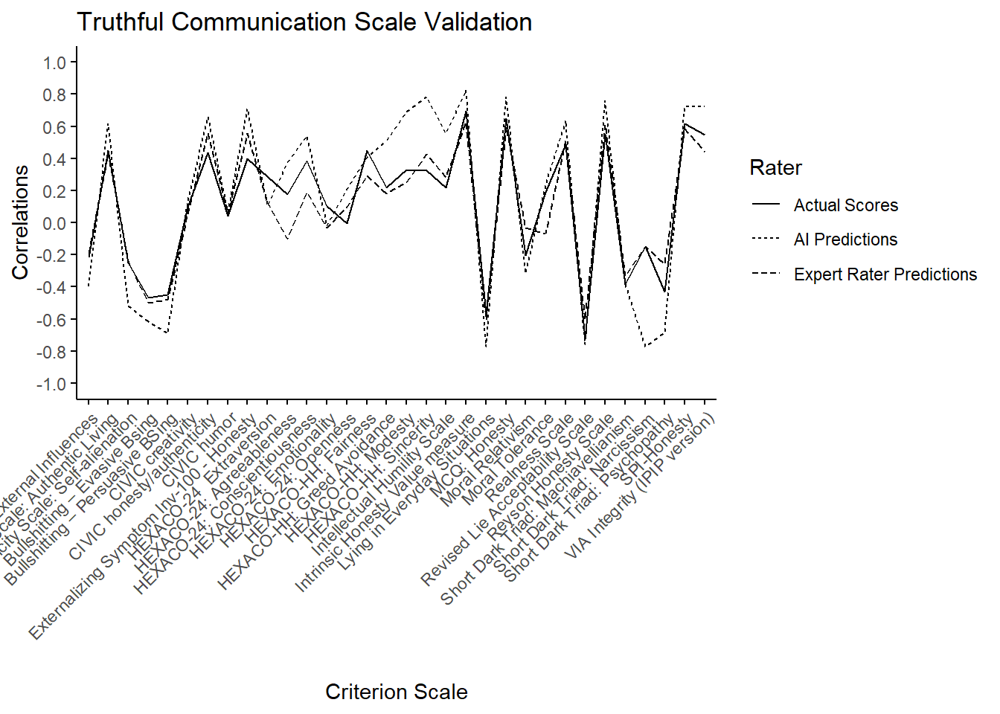

The goal of this project is to create a graph for my AI research. Specifically, the graph will display our results for our QCV Truthful Communication Scale Validation project. The graph should replicate a line graph created by Mike that has predictions (correlations) along the y-axis and the criterion variables on the x-axis. I will use this graph in my poster at an upcoming conference!
#install.packages("haven")The haven package allows you to read in SPSS data
library(haven)
library(tidyr)
library(tidyverse)## ── Attaching core tidyverse packages ──────────────────────── tidyverse 2.0.0 ──
## ✔ dplyr 1.1.4 ✔ purrr 1.0.2
## ✔ forcats 1.0.0 ✔ readr 2.1.5
## ✔ ggplot2 3.5.1 ✔ stringr 1.5.1
## ✔ lubridate 1.9.4 ✔ tibble 3.2.1
## ── Conflicts ────────────────────────────────────────── tidyverse_conflicts() ──
## ✖ dplyr::filter() masks stats::filter()
## ✖ dplyr::lag() masks stats::lag()
## ℹ Use the conflicted package (<http://conflicted.r-lib.org/>) to force all conflicts to become errorsAI <- read_spss("C:/Users/crawhk23/Documents/GitHub/Portfolio/TComm AI & Human SS (Names and No Names).sav")print(AI)## # A tibble: 32 × 21
## ScaleNum Scale mf cs cr ej wf es Actual AI1 AI2 AI3
## <dbl> <chr> <dbl> <dbl> <dbl> <dbl> <dbl> <dbl> <dbl> <dbl> <dbl> <dbl>
## 1 1 Exter… 0.65 0.65 0.4 0.5 0.5 0.65 0.397 0.7 0.7 0.75
## 2 2 Reyso… 0.65 0.7 0.5 0.55 0.6 0.65 0.551 0.75 0.75 0.8
## 3 3 SPI-H… 0.55 0.7 0.5 0.5 0.55 0.7 0.615 0.7 0.7 0.75
## 4 4 CIVIC… 0.6 0.7 0.3 0.55 0.4 0.8 0.434 0.65 0.65 0.7
## 5 5 CIVIC… 0 0.1 0.1 0.15 0 0 0.0989 0.1 0.1 0.2
## 6 6 CIVIC… 0 0.2 0 0.1 0 0 0.0435 0.05 0.05 0.1
## 7 7 VIA I… 0.6 0.5 0.2 0.3 0.35 0.7 0.549 0.7 0.7 0.8
## 8 8 Realn… 0.7 0.75 0.1 0.4 0.3 0.8 0.486 0.65 0.6 0.7
## 9 9 Authe… 0.5 0.6 0.2 0.4 0.25 0.65 0.448 0.6 0.55 0.65
## 10 10 Authe… -0.2 -0.45 0 -0.3 0.1 -0.3 -0.217 -0.4 -0.4 -0.4
## # ℹ 22 more rows
## # ℹ 9 more variables: AI4 <dbl>, AI5 <dbl>, AI6 <dbl>, AI_NN1 <dbl>,
## # AI_NN2 <dbl>, AI_NN3 <dbl>, AI_NN4 <dbl>, AI_NN5 <dbl>, AI_NN6 <dbl>AIAvgs <- AI %>%
mutate(
ExpertAvg = rowMeans(across(mf:es), na.rm = TRUE),
AIAvg= rowMeans(across(AI1:AI6), na.rm = TRUE)
)print(AIAvgs)## # A tibble: 32 × 23
## ScaleNum Scale mf cs cr ej wf es Actual AI1 AI2 AI3
## <dbl> <chr> <dbl> <dbl> <dbl> <dbl> <dbl> <dbl> <dbl> <dbl> <dbl> <dbl>
## 1 1 Exter… 0.65 0.65 0.4 0.5 0.5 0.65 0.397 0.7 0.7 0.75
## 2 2 Reyso… 0.65 0.7 0.5 0.55 0.6 0.65 0.551 0.75 0.75 0.8
## 3 3 SPI-H… 0.55 0.7 0.5 0.5 0.55 0.7 0.615 0.7 0.7 0.75
## 4 4 CIVIC… 0.6 0.7 0.3 0.55 0.4 0.8 0.434 0.65 0.65 0.7
## 5 5 CIVIC… 0 0.1 0.1 0.15 0 0 0.0989 0.1 0.1 0.2
## 6 6 CIVIC… 0 0.2 0 0.1 0 0 0.0435 0.05 0.05 0.1
## 7 7 VIA I… 0.6 0.5 0.2 0.3 0.35 0.7 0.549 0.7 0.7 0.8
## 8 8 Realn… 0.7 0.75 0.1 0.4 0.3 0.8 0.486 0.65 0.6 0.7
## 9 9 Authe… 0.5 0.6 0.2 0.4 0.25 0.65 0.448 0.6 0.55 0.65
## 10 10 Authe… -0.2 -0.45 0 -0.3 0.1 -0.3 -0.217 -0.4 -0.4 -0.4
## # ℹ 22 more rows
## # ℹ 11 more variables: AI4 <dbl>, AI5 <dbl>, AI6 <dbl>, AI_NN1 <dbl>,
## # AI_NN2 <dbl>, AI_NN3 <dbl>, AI_NN4 <dbl>, AI_NN5 <dbl>, AI_NN6 <dbl>,
## # ExpertAvg <dbl>, AIAvg <dbl>ggplot(AIAvgs, aes(x = Scale)) +
geom_line(aes(y = Actual, group = 1, linetype = "Actual Scores")) +
geom_line(aes(y = ExpertAvg, group = 2, linetype = "Expert Rater Predictions")) +
geom_line(aes(y = AIAvg, group = 3, linetype = "AI Predictions")) +
labs(title = "Truthful Communication Scale Validation",
x = "Criterion Scale", linetype = "Rater", y= "Correlations")+
theme_minimal() +
theme(
panel.grid = element_blank(),
panel.background = element_blank(),
axis.line = element_line(),
axis.ticks = element_line(),
axis.text.x = element_text(angle = 45, hjust = 1)) +
scale_y_continuous(limits = c(-1, 1), breaks = seq(-1, 1, by = 0.2))
R translation
ggplot(AIAvgs, aes(x = Scale)) + –> creating a plot with x axis denoting scale
geom_line(aes(y = Actual, group = 1, linetype = “Actual Scores”)) + geom_line(aes(y = ExpertAvg, group = 2, linetype = “Expert Rater Predictions”)) + geom_line(aes(y = AIAvg, group = 3, linetype = “AI Predictions”)) –> these lines are plotting the data for each group with the linetype varying by group
labs(title = “Truthful Communication Scale Validation”, x = “Criterion Scale”, linetype = “Rater”, y= “Correlations”)+ –> labeling the axes and key
theme_minimal() + theme( panel.grid = element_blank(), panel.background = element_blank(), axis.line = element_line(), axis.ticks = element_line(), axis.text.x = element_text(angle = 45, hjust = 1)) + scale_y_continuous(limits = c(-1, 1), breaks = seq(-1, 1, by = 0.2)) –> adjusting theme to a white background, no grid or lines, and ticks every .2
Replicated graph!